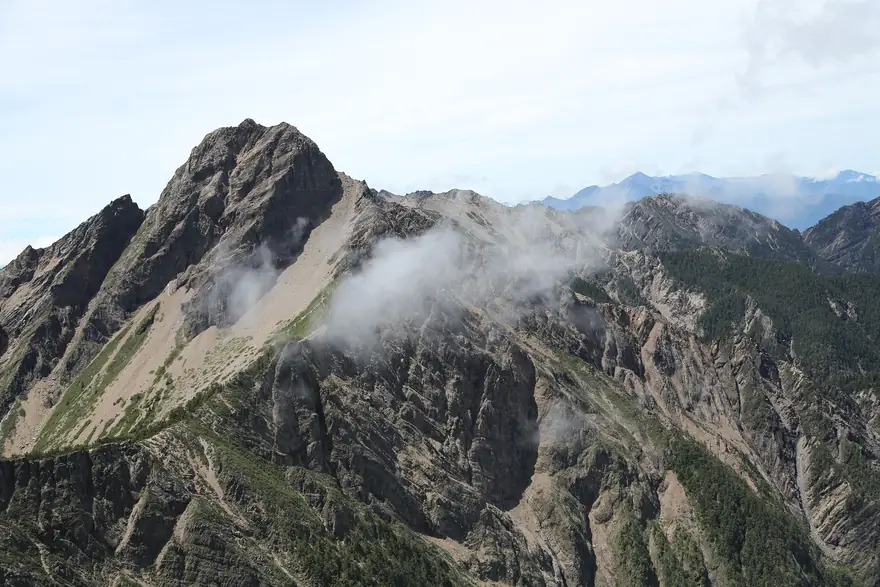
3,952 m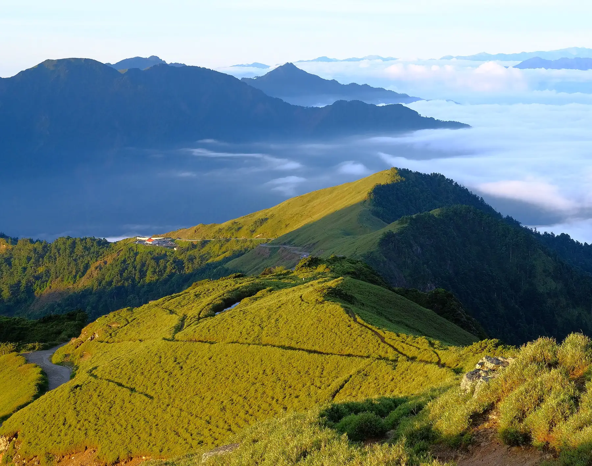
- 單程NT$5,000 起／每車
- 上車地點台北車站・台中高鐵・到府
- 行程天數當日・兩天・三天都可以
- 車款五人座・九人座・最多 4／8 位乘客
-
01
市區接你
約在台北車站或台中高鐵站碰面，也可以直接到你家樓下接。配合登山行程安排出發時間，凌晨出發也能預約。
-
02
直達登山口
專車一路開到登山口，沿途可做最後補給。裝備放在車廂，你可以在車上補眠。
-
03
下山接你回家
約好下山時間，車在登山口等你。上車就能休息，直接送你回市區。
熱門路線
常跑的登山口
玉山、雪山、合歡山怎麼去？熱門百岳接駁路線一次看。沒列到的登山口也能去，告訴我們你要爬哪座山就好。
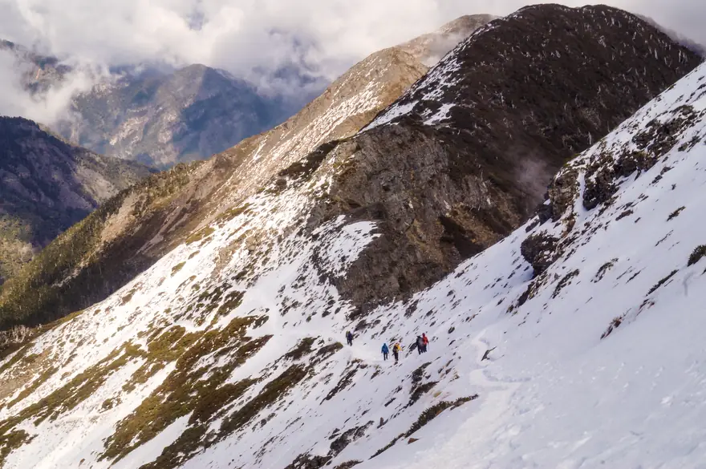
3,886 m雪山主東峰・武陵四秀
走進雪山圈谷
- 景色特色雪山圈谷、黑森林與高山稜線
- 適合對象有高山經驗、安排兩天以上行程的山友
- 交通特色武陵農場接送；部分時期有車輛通行管制
- 登山口
- 武陵農場（台中和平）
- 台北車程
- 約 3.5 小時
單程・整車價
台北出發五人座 $5,500九人座 $7,000
台中出發五人座 $6,500九人座 $7,500
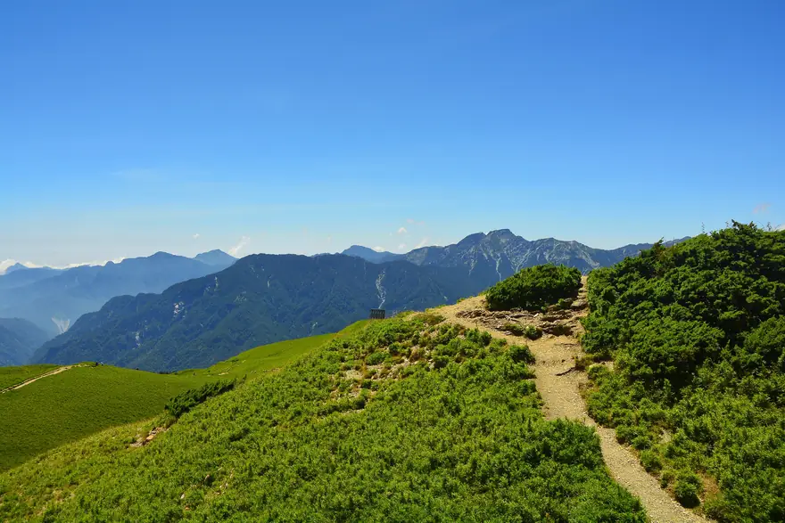
3,417 m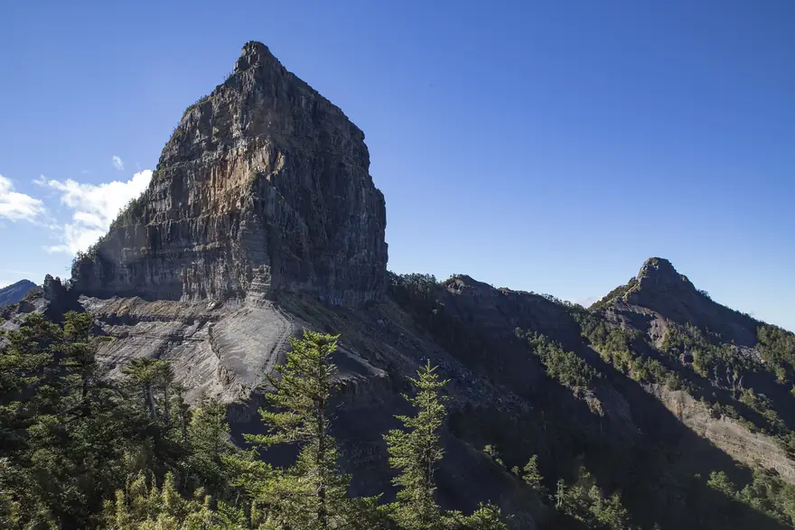
3,492 m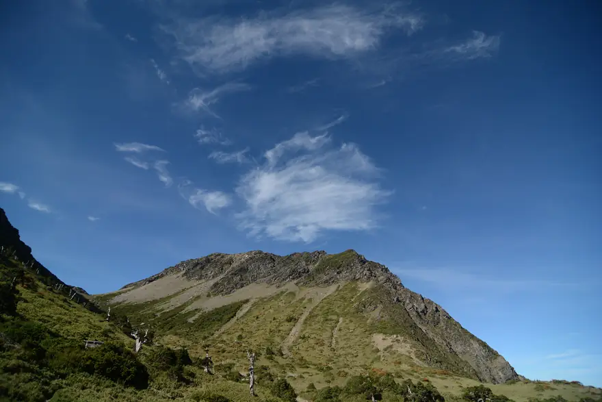
3,742 m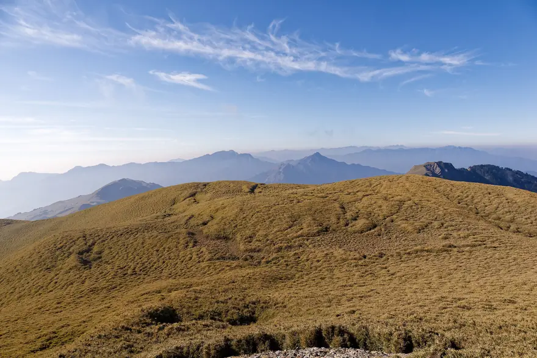
3,358 m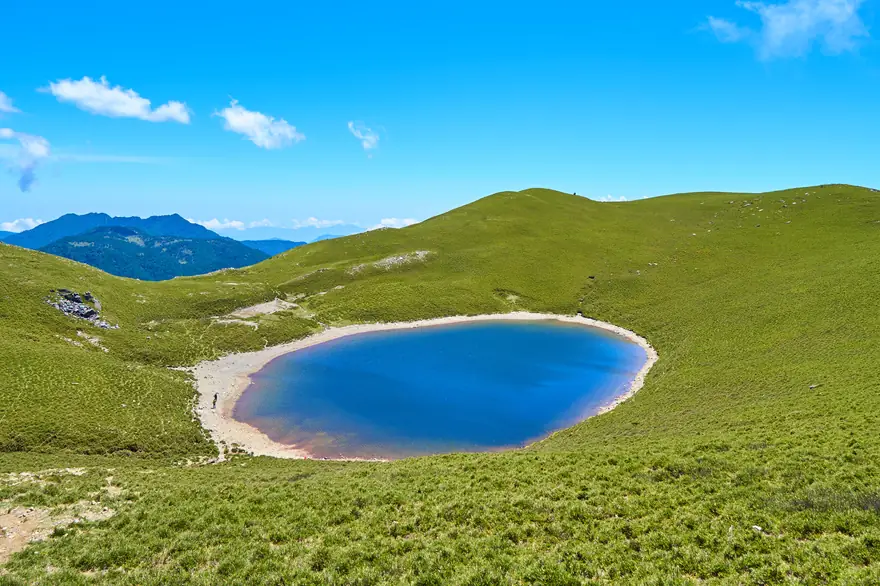
3,310 m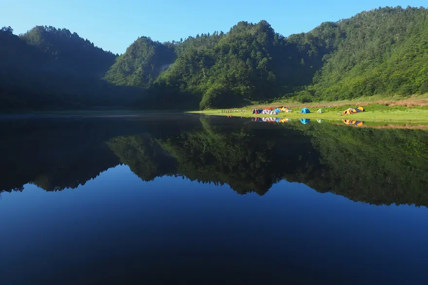
1,300 m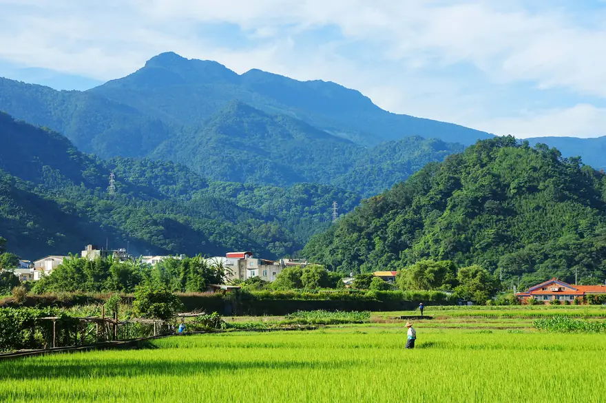
2,220 m霞喀羅古道（A 進 B 出）
一次走訪山林古道
- 景色特色歷史古道、溪谷，秋季部分區段可賞楓
- 適合對象喜歡古道文化、有長距離步行經驗的團體
- 交通特色起點送、終點接，不必回原點取車
- 登山口
- 養老・石鹿（新竹尖石、五峰）
來回・整車價
台北出發九人座 $14,000
台中出發九人座 $14,000
霞喀羅古道（養老進出）
漫步歷史古道與山林
- 景色特色森林與歷史步道，可依折返點調整長度
- 適合對象想體驗古道、但不走完整縱走的山友
- 交通特色同一端進出；先確認養老端可到位置
- 登山口
- 養老（新竹尖石）
一天來回・整車價
台北出發九人座 $8,000
台中出發九人座 $8,000
車程為一般路況下的概估，實際時間依出發時段與路況而定。
我們的車
九人座 Volkswagen Caravelle
照片就是實際接送你的車：黑色福斯 Caravelle 九人座，最多 8 位乘客，大背包放後車廂。人數少時另有五人座，詢價時告訴我們人數和背包數量，我們幫你安排車型。
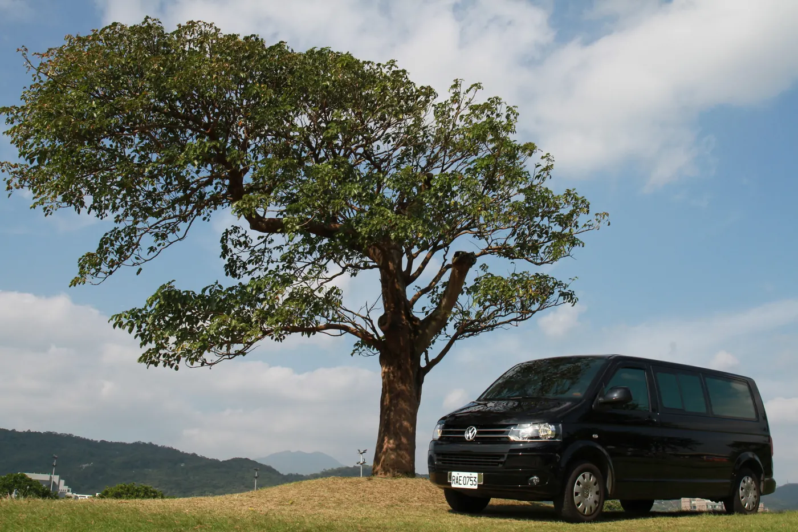
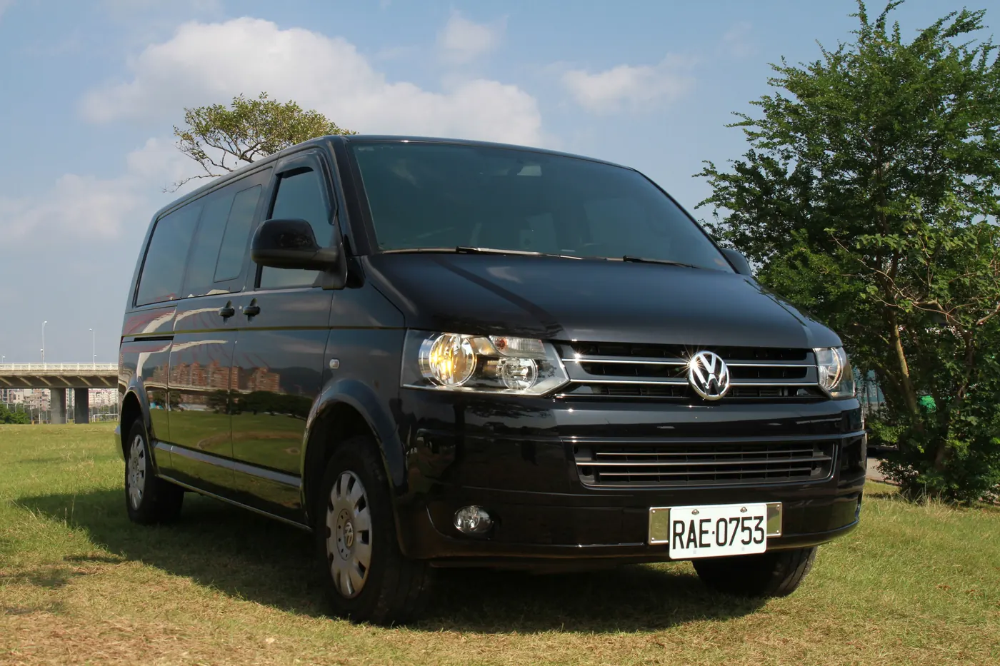
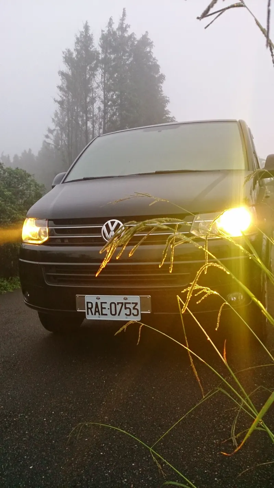
收費方式
整車包車，揪團更划算！
接駁費用公開透明，出發前就能掌握交通預算。五人座最多搭乘 4 人、九人座最多搭乘 8 人。以下為整車參考費用，不是按人頭計價。
| 路線 | 單程 | 來回 | 一天來回 |
|---|---|---|---|
| 玉山（塔塔加） | $6,500 | $12,000 | — |
| 雪山・武陵四秀 | $5,500 | $11,000 | $9,000 |
| 合歡山群峰 | $6,000 | $12,000 | — |
| 大霸尖山 | $6,000 | $12,000 | — |
| 南湖大山 | $5,500 | $11,000 | — |
| 奇萊南華 | $6,000 | $12,000 | — |
| 嘉明湖 | $8,000 | $16,000 | — |
| 松蘿湖 | $5,000 | $10,000 | — |
| 羅馬縱走 | $5,500 | $11,000 | $9,000 |
| 高島縱走 | — | — | $6,500 |
| 塔曼山 | — | — | $6,500 |
| 北得拉曼 | — | — | $6,500 |
| 郡大山 | — | — | — |
| 霞喀羅古道（A 進 B 出） | — | — | — |
| 霞喀羅古道（養老進出） | — | — | — |
| 加里山 | 詢價 | 詢價 | 詢價 |
| 玉山（塔塔加） | $8,000 | $15,000 | — |
| 雪山・武陵四秀 | $7,000 | $14,000 | $12,000 |
| 合歡山群峰 | $7,000 | $14,000 | — |
| 大霸尖山 | $7,000 | $14,000 | — |
| 南湖大山 | $7,000 | $14,000 | — |
| 奇萊南華 | $7,000 | $14,000 | — |
| 嘉明湖 | $10,000 | $20,000 | — |
| 松蘿湖 | $6,000 | $12,000 | — |
| 羅馬縱走 | $7,000 | $14,000 | $12,000 |
| 高島縱走 | — | — | $8,000 |
| 塔曼山 | — | — | $8,000 |
| 北得拉曼 | — | — | $8,000 |
| 郡大山 | — | $18,000 | $16,000 |
| 霞喀羅古道（A 進 B 出） | — | $14,000 | $10,000 |
| 霞喀羅古道（養老進出） | — | — | $8,000 |
| 加里山 | 詢價 | 詢價 | 詢價 |
| 玉山（塔塔加） | $6,000 | $11,000 | — |
| 雪山・武陵四秀 | $6,500 | $13,000 | $12,000 |
| 合歡山群峰 | $5,000 | $10,000 | — |
| 大霸尖山 | $6,000 | $12,000 | — |
| 南湖大山 | $6,500 | $13,000 | — |
| 奇萊南華 | $5,000 | $10,000 | — |
| 嘉明湖 | $8,000 | $16,000 | — |
| 松蘿湖 | $6,000 | $12,000 | — |
| 羅馬縱走 | $6,000 | $12,000 | $10,000 |
| 高島縱走 | — | — | $6,500 |
| 塔曼山 | — | — | $7,500 |
| 北得拉曼 | — | — | $7,000 |
| 郡大山 | — | — | — |
| 霞喀羅古道（A 進 B 出） | — | — | — |
| 霞喀羅古道（養老進出） | — | — | — |
| 加里山 | 詢價 | 詢價 | 詢價 |
| 玉山（塔塔加） | $7,500 | $14,000 | — |
| 雪山・武陵四秀 | $7,500 | $15,000 | $13,000 |
| 合歡山群峰 | $6,000 | $12,000 | — |
| 大霸尖山 | $7,000 | $14,000 | — |
| 南湖大山 | $7,500 | $15,000 | — |
| 奇萊南華 | $6,000 | $12,000 | — |
| 嘉明湖 | $10,000 | $20,000 | — |
| 松蘿湖 | $7,000 | $14,000 | — |
| 羅馬縱走 | $7,000 | $14,000 | $12,000 |
| 高島縱走 | — | — | $8,000 |
| 塔曼山 | — | — | $8,000 |
| 北得拉曼 | — | — | $9,000 |
| 郡大山 | — | $15,000 | $13,000 |
| 霞喀羅古道（A 進 B 出） | — | $14,000 | $10,000 |
| 霞喀羅古道（養老進出） | — | — | $8,000 |
| 加里山 | 詢價 | 詢價 | 詢價 |
- 單程一趟車：從市區到登山口，或從登山口回市區。
- 來回去程、回程兩段行程接駁，適合兩天以上的行程，下山日期和時間事先約好，行程確認單會註明。
- 一天來回當天送你上山，等你下山再載回市區，適合單日行程。
- 其他標示「—」的走法、A 進 B 出的縱走、沒列出的登山口，用 LINE、Email 或詢價表單傳訊息給我們，直接報價。
付款與取消
匯款LINE PayPayPal新台幣現金
訂金
確認報價後支付訂金，可用匯款或 LINE Pay，海外旅客可用 PayPal。完成訂金支付後，才算預約成立並保留車輛。
尾款
以新台幣現金或匯款支付。付款期限會寫在報價和行程確認單上。
取消・改期
出發三日前通知，可全額退費取消或改期。遇封山或官方管制，可於出發前一日取消。
未含費用
私人登山口、入園費、停車費等其他費用，會註明在行程確認單上。
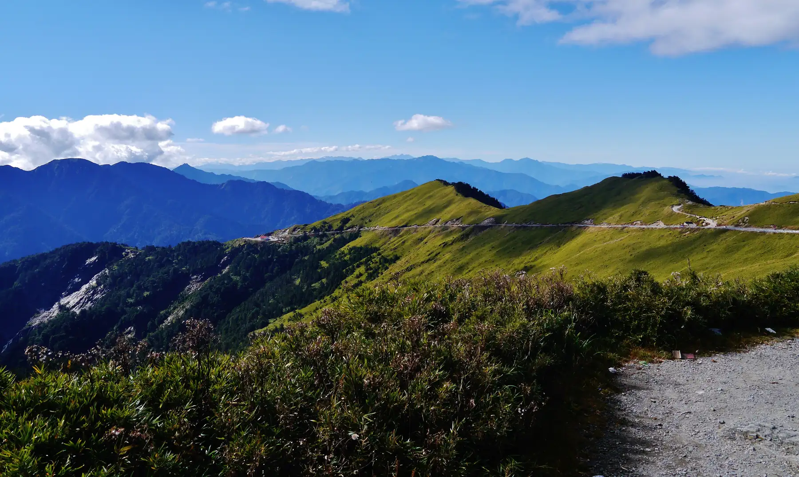
為什麼搭專車
凌晨出發、不熟山路、
下山累到不想開車？
這些交給我們。
-
門口到登山口
不用轉車、不用找停車位，很多登山口根本沒有大眾運輸。
-
彈性安排時間
配合入山與下山時間安排接送，不必遷就固定班次。
-
下山不用自己開
走了一整天，回程在車上睡覺比疲勞駕駛安全得多。
-
整車包車更划算
以整台車計價，和山友一起出發，交通預算一次掌握。
免費詢價
告訴我們你要去哪座山
填好表單送出，我們確認車輛與接送安排後提供報價。電話或 Email 留一個就好，從海外來也可以填國際號碼；也能用 LINE 或 Email 傳訊息給我們。司機行車中不便接聽電話，請以文字訊息詢價。
- 1填寫行程
- 2送出詢價
- 3確認車輛與行程，收到報價
- 4支付訂金，完成預約
付款方式訂金：匯款、LINE Pay、PayPal（海外）｜尾款：新台幣現金或匯款。取消與改期規定
傳訊息詢價

LINE0910321666
WhatsApp傳訊息
IG@taipei_cars
FBFacebook 粉絲專頁
信箱taipei.cars@gmail.com
掃描行動條碼、點上面的 LINE ID，或在 LINE 搜尋這個 ID 加好友。
常見問題
出發前，你可能想知道
如何預約接駁？
請提供登山路線、出發及回程日期、搭乘人數、上車地點及預計時間。我們會確認行程與車輛安排後提供報價。雙方確認費用及接送條件，並完成約定的訂金支付後，才算預約成立。
預約需要付訂金嗎？
確認車輛與行程後，我們會提供正式報價及訂金付款資訊。訂金金額、尾款支付時間及方式均會在確認預約前告知，完成訂金支付後保留接送車輛。
可以使用哪些付款方式？
訂金可用匯款或 LINE Pay，海外旅客可用 PayPal；尾款以新台幣現金或匯款支付。我們會在確認報價時提供付款資訊與期限，海外旅客請先告知付款所在地，我們將確認適合的支付方式。
如果行程取消或需要改期怎麼辦？
出發三日前通知，可全額退費取消或改期。如遇封山或官方管制，可於出發前一日取消。
網站價格就是最後付款價格嗎？
網站價格為指定出發區域、車型及行程類型的整車參考費用。實際報價將依上車地點、接送時間、停靠需求、行程天數及道路條件確認。若有額外費用，會在預約成立前列明；行程確認單也會註明未包含的其他費用，例如私人登山口、入園費、停車費。
接駁費用包含什麼？哪些要另外準備？
網站價格是整台車的接駁費用：從上車地點送到登山口，或從登山口接回市區，五人座最多 4 位乘客、九人座最多 8 位乘客。私人登山口、入園費、停車費等其他費用不在網站價格內，會註明在行程確認單上。入園入山申請、山屋或營地、登山保險和裝備請自行準備，詢價時我們可以提供入山證、山屋的申請資訊。
費用怎麼算？
以整台車計價，有五人座和九人座兩種車型，台北、台中出發都可以，單程 NT$5,000 起，各路線的價格列在上面的收費表。收費表上沒有價格的走法或沒列出的登山口，把目的地、日期、人數傳給我們，我們會回覆一個明確的金額。
單程、來回、一天來回有什麼差別？
單程：從市區送往登山口，或從登山口接回市區。來回：去程、回程兩段行程接駁，分別在約定的日期接送，行程確認單會註明。一天來回：同一天送往登山口，依事先約定的時間接回。
如果下山時間比預計晚，司機會等嗎？
起登前，我們會再次和您確認下山時間及地點，並在約定時間等您。我們了解登山行程可能受體力、天候與路況影響。為了方便安排回程接送，請盡可能在行程中更新預計下山時間。接送等待時間、可能產生的額外費用及緊急聯絡方式，均會在預約時事先確認。
可以臨時更改上車地點或增加停靠站嗎？
如需從飯店、住家或其他指定地點出發，請在詢價時告知地址。我們將依行車距離、路線與車輛調度確認是否能安排，並事先提供額外費用。臨時變更則需視當日路況及行程安排而定。
如果登山口因道路封閉或管制，車輛無法抵達怎麼辦？
山區道路可能因天候、施工、災害或主管機關管制而影響通行。我們會依最新道路資訊確認合法且可安全抵達的接送地點。若車輛無法進入原定地點，將與您討論替代集合點、調整出發時間或改期安排。若最終無法履行原定交通服務，將依適用法規及雙方約定處理退費。
九人座真的可以坐八位乘客加八個大背包嗎？
九人座最多可搭乘 8 位乘客，但實際行李空間會受背包大小、件數及車款配置影響。如果每位旅客都攜帶大型登山背包，請在詢價時告知背包容量及件數，我們會協助評估適合的車型及載運方式。
是什麼車？最多可以坐幾個人？
有兩種車型：五人座最多可載 4 位乘客；九人座是 Volkswagen Caravelle 或同級車款，最多可載 8 位乘客。人數或大背包比較多的時候，請在詢價時先告訴我們，我們幫你建議車型。
沒列在網站上的登山口可以去嗎？
可以問。網站上列的是最常跑的路線，其他登山口請在表單選「其他登山口」並在備註寫下地點。
入園、入山證和山屋要自己申請嗎？
要。我們負責的是交通接駁，入園入山申請、山屋或營地、登山保險和裝備都請自行準備；詢價時我們可以提供入山證、山屋的申請資訊。
從香港、馬來西亞、新加坡來，可以預約嗎？
可以。詢價表單可以填 +852、+60、+65 等國際號碼，或只留 Email，並選擇你方便的聯絡方式（WhatsApp、LINE 或 Email）。請一併寫下航班抵達日期和偏好語言，我們確認車輛與行程後回覆報價。
海外旅客要怎麼付款？
訂金可用 PayPal，也可以用匯款或 LINE Pay；尾款以新台幣現金或匯款支付。詢價時請先告知付款所在地，我們會在報價時確認適合的支付方式。
從台北到登山口要開多久？
依路線不同：合歡山約 4 小時，玉山塔塔加約 4.5–5 小時，嘉明湖向陽登山口約 7–8 小時。剛抵達台灣的話，建議預留足夠的交通與休息時間，每條路線的車程寫在路線頁上。
海外旅客也要自己申請入園、入山嗎？
要。我們負責交通接駁，入園入山申請、山屋或營地、登山保險和裝備都請自行準備。詢價時我們可以提供入山證、山屋的申請資訊，各路線頁也有官方申請網站的連結。
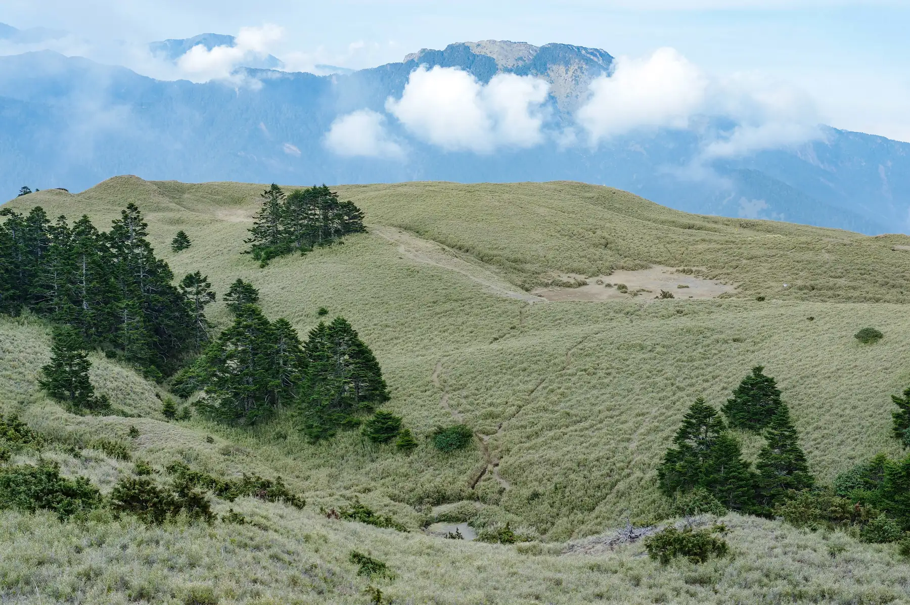